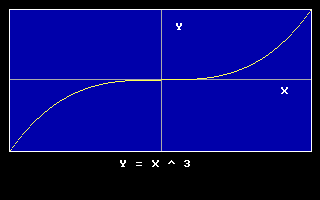

Window

Valide la nouvelle cartographie des coordonnées de la zone de visualisation graphique courante
Window [ [Screen] ( x1, y1 )-( x2, y2 ) ]
Screen
Window est utilisé pour définir un nouveau système de coordonnées. (x1, y1) et (x2, y2) sont les nouvelles coordonnées, à cartographier, des deux coins opposés de la zone de visualisation graphique courante; toutes les futures utilisations de coordonnées passées aux fonctions graphiques seront affectées par cette nouvelle cartographie, à partir de ce moment-là. Si Screen est omis, le nouveau système de coordonnées est Cartesien, c'est à dire, avec des coordonnées y augmentant du bas vers le haut. Appeler Window sans argument pour annuler la transformation des coordonnées.
Le comportement actuel de FreeBasic est de préserver les coordonnées des coins de Window, plutôt que celles spécifiques de la cartographie. Ceci signifie que la cartographie des coordonnées peut changer après des appels à View. Les coins de Window sont actuellement pris en compte lorsque l'on travaille sur les tampons d'image, donc quand un Window est vakide, la cartographie des coordonnées pourra être différente d'une image à une autre.
Quand il n'y a pas de Window en cours, il n'y a pas de cartographie valide, ainsi le système de coordonnées effectif est, indépendent de la taille du tampon image ou des coordonnées View coordinates (s'il y en a).
Syntaxe
Window [ [Screen] ( x1, y1 )-( x2, y2 ) ]
Paramètres
Screen
Argument facultatif specifiant les coordonnées y1 augmentant du haut vers le bas.
( x1, y1 )-( x2, y2 )Les nouvelles valeurs (en virgule flottante) correspondent à des coins opposés de la fenêtre actuelle. S'il est omis, la cartographie des coordonnées de la fenêtre graphique est supprimée.
Description
Window est utilisé pour définir un nouveau système de coordonnées. (x1, y1) et (x2, y2) sont les nouvelles coordonnées, à cartographier, des deux coins opposés de la zone de visualisation graphique courante; toutes les futures utilisations de coordonnées passées aux fonctions graphiques seront affectées par cette nouvelle cartographie, à partir de ce moment-là. Si Screen est omis, le nouveau système de coordonnées est Cartesien, c'est à dire, avec des coordonnées y augmentant du bas vers le haut. Appeler Window sans argument pour annuler la transformation des coordonnées.
Le comportement actuel de FreeBasic est de préserver les coordonnées des coins de Window, plutôt que celles spécifiques de la cartographie. Ceci signifie que la cartographie des coordonnées peut changer après des appels à View. Les coins de Window sont actuellement pris en compte lorsque l'on travaille sur les tampons d'image, donc quand un Window est vakide, la cartographie des coordonnées pourra être différente d'une image à une autre.
Quand il n'y a pas de Window en cours, il n'y a pas de cartographie valide, ainsi le système de coordonnées effectif est, indépendent de la taille du tampon image ou des coordonnées View coordinates (s'il y en a).
Exemple
Screen 13
'' definition zone clipping
View ( 10, 10 ) - ( 310, 150 ), 1, 15
'' coordonnées vue
Window ( -1, -1 ) - ( 1, 1 )
'' Dessin axe X
Line (-1,0)-(1,0),7
Draw String ( 0.8, -0.1 ), "X"
'' Dessin axe Y
Line (0,-1)-(0,1),7
Draw String ( 0.1, 0.8 ), "Y"
Dim As Single x, y, s
'' compute step size
s = 2 / PMap( 1, 0 )
'' graphique de la function
For x = -1 To 1 Step s
y = x ^ 3
PSet( x, y ), 14
Next x
'' retour aux coordonnées ecran
Window
'' annule zone clipping
View Screen
'' dessin titre
Draw String ( 120, 160 ), "Y = X ^ 3"
Sleep
'' definition zone clipping
View ( 10, 10 ) - ( 310, 150 ), 1, 15
'' coordonnées vue
Window ( -1, -1 ) - ( 1, 1 )
'' Dessin axe X
Line (-1,0)-(1,0),7
Draw String ( 0.8, -0.1 ), "X"
'' Dessin axe Y
Line (0,-1)-(0,1),7
Draw String ( 0.1, 0.8 ), "Y"
Dim As Single x, y, s
'' compute step size
s = 2 / PMap( 1, 0 )
'' graphique de la function
For x = -1 To 1 Step s
y = x ^ 3
PSet( x, y ), 14
Next x
'' retour aux coordonnées ecran
Window
'' annule zone clipping
View Screen
'' dessin titre
Draw String ( 120, 160 ), "Y = X ^ 3"
Sleep

Différences avec QB
- QBASIC préserve la cartographie des coordonnées après des appels successifs à VIEW.
- Actuellement FreeBASIC préserve les coordonnées WINDOW après des appels successifs à VIEW, ou lors d'un travail sur des images, ce qui signifie que les coordonnées de cartographie peuvent faire l'objet de mise à échelle/translations. (Si un WINDOW n'a pas été validé, il n'existe pas de cartographie des coordonnées, et ainsi elle ne peut changer après des appels à VIEW.) Ce comportement peut changer à l'avenir, mais un comportement cohérent peut être assuré au cours de la visualisation de coordonnées inconsistantes de la zone de visualisation graphique par un rappel de WINDOW lorsque vous changez VIEW.
Voir aussi